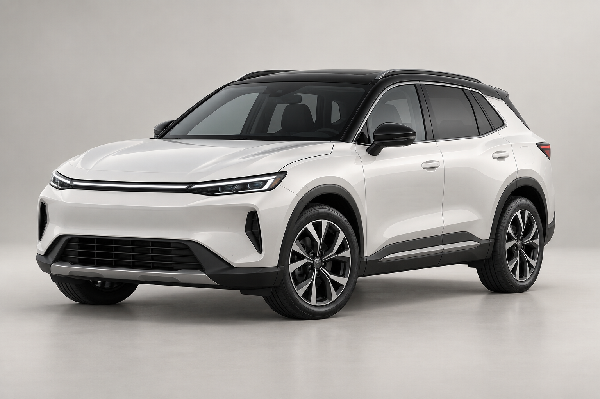

Không gian 5 chỗ
Hai hàng ghế, khoang hành lý phía sau và ghế sau gập được.
SUV 5 CHỖ / ASTER S5
Xem cấu hình, chọn phiên bản
và trao đổi báo giá với nhân viên tư vấn.

S5 / TRẮNG NGỌC01 / TÌM HIỂU MẪU XE
Aster S5 có hai phiên bản Standard và Premium. Xem thông số và trang bị bên dưới để chọn cấu hình bạn muốn nhận báo giá.
Hai hàng ghế, khoang hành lý phía sau và ghế sau gập được.
So sánh hộp số, mâm xe và trang bị hỗ trợ đỗ xe giữa hai phiên bản.
Chọn phiên bản và màu xe để tạo yêu cầu báo giá hoặc lịch lái thử mẫu.
02 / PHIÊN BẢN & MÀU XE
Thông số, giá và màu dưới đây là dữ liệu mẫu.
Không phải báo giá của một hãng xe thực tế.
CHỌN PHIÊN BẢN
Chưa gồm phí đăng ký, bảo hiểm và các chi phí khác. Nhân viên tư vấn sẽ xác nhận báo giá theo yêu cầu thực tế khi sử dụng website thật.
03 / SO SÁNH PHIÊN BẢN
Cấu hình giả định dùng để minh họa cách
trình bày sản phẩm trên website.
| Hạng mục | S5 Standard | S5 Premium |
|---|---|---|
| Giá xe minh họa | 649 triệu đồng | 749 triệu đồng |
| Số chỗ ngồi | 5 chỗ | 5 chỗ |
| Động cơ mẫu | 1.5 Turbo | 1.5 Turbo |
| Hộp số | Tự động 6 cấp | Ly hợp kép 7 cấp |
| Mâm xe | 17 inch | 18 inch |
| Hỗ trợ đỗ xe | Camera lùi | Camera 360° |
| Ghế lái | Chỉnh cơ | Chỉnh điện |
NHÂN VIÊN TƯ VẤN MẪU
Tư vấn phiên bản, báo giá và lịch lái thử.
04 / THÔNG TIN THÊM
Đây là giá xe giả định để minh họa giao diện, chưa bao gồm các chi phí khác. Khi triển khai website thật, nhân viên kinh doanh cần cập nhật giá và xác nhận từng khoản với khách.
Có. Lựa chọn của bạn sẽ được điền vào form và phiếu yêu cầu mẫu. Bạn có thể thay đổi trước khi tạo phiếu.
Không. Demo chỉ tạo phiếu yêu cầu trên thiết bị để bạn xem, sao chép hoặc tải xuống. Website thật cần cấu hình thông tin liên hệ và kết nối xử lý form.
05 / BÁO GIÁ & LÁI THỬ
Điền nhu cầu và thông tin liên hệ để xem thử phiếu yêu cầu của khách hàng.
Demo không gửi hoặc lưu thông tin của bạn. Bạn có thể dùng thông tin giả để thử form.